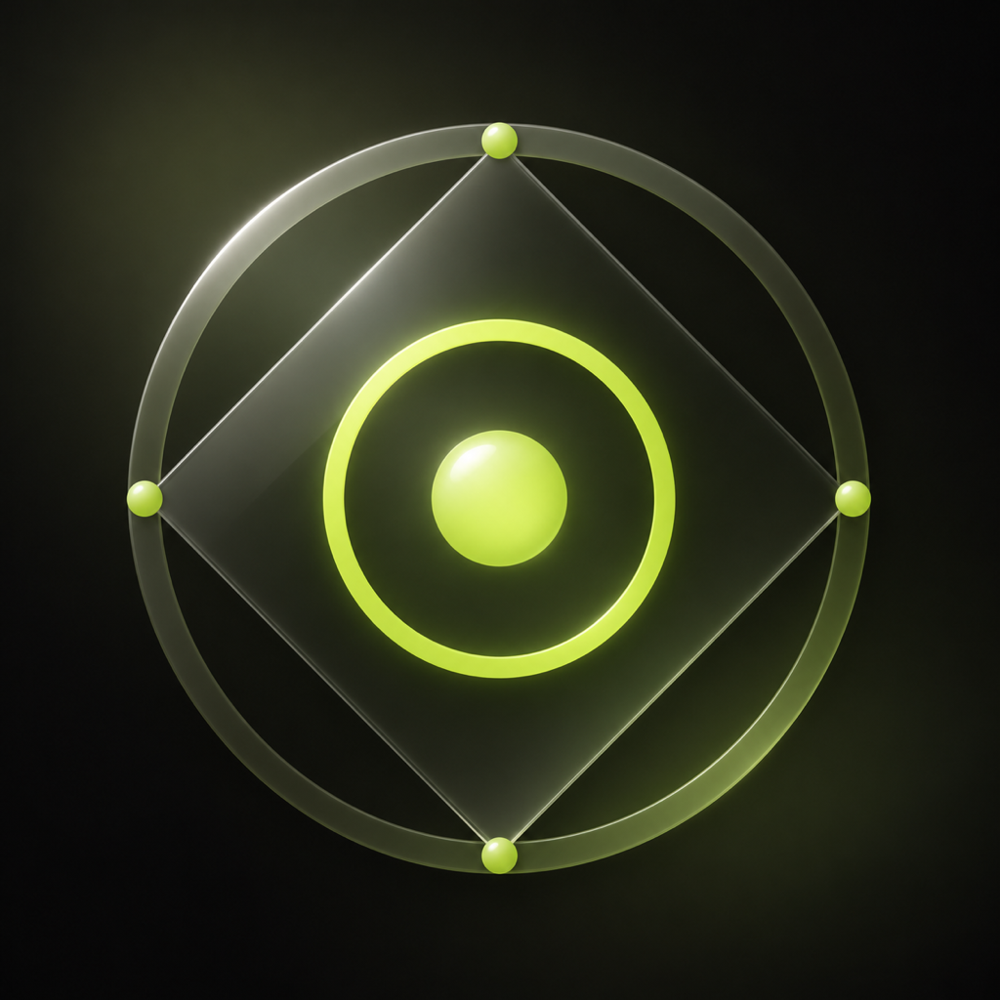

圆角只示意安装后的外形。Apple 系统外缘需在参数定稿后单独导出验收。
图标上方的圆角为外形示意，Apple 系统外缘需另行导出验收。
小尺寸
96
64
32
留一版，边调边比
保存与导出
参数可再次导入，继续调整图稿始终导出完整方形；Mobile 与 Desktop 共用同一份。预览外形与环境色不进入导出。
这版如何绘制
以 07 为参照重新绘制几何、渐变、柔晕和薄边高光。当前图稿完全由 SVG 代码生成，没有把 07 当底图叠效果。五颗圆珠与内环为不透明材质，菱形和外环为模拟玻璃。光的传导与反射采用可调的二维视觉模拟；07 是视觉参照，当前图标为参数化重绘。
参数只保存在本浏览器。导出参数文件可备份或换设备继续；刷新会恢复最后一次调整。